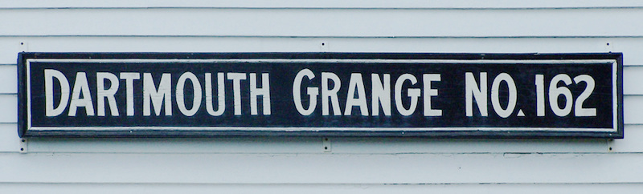

2017-03-08 08:00

Some of you have already received a similar invitation, so forgive me if it is a duplication.
Marching Forward, affiliated with Swing Left and one of two local Indivisible chapters, will be holding its next meeting in 8 days:
Thursday March 16, 6:30 - 8:00PM
Dartmouth Grange, 1133 Fisher Road, North Dartmouth MA. First floor hall
Organizational Meeting and discussion with MA Rep. Chris Markey
Space is limited, so please RSVP because a maximum number of people are allowed in the building. If the maximum number has been exceeded, we promise to send you minutes of the meeting.
Members of other Indivisible chapters are very welcome but please RSVP. We are expecting a big turnout.
Parking is limited at the Grange, and there will be an exercise class in the upstairs room that night. Please plan to park at Alderbrook Farm, 1213 Russells Mills Road, or along Fisher Road. At Alderbrook there’s plenty of parking. Most convenient to the Grange is the area between Fisher Road and the yellow farm stand building, and in front of the greenhouse. Fisher Road is narrow, pull well off the road if you park along it. We will be “passing the hat” to cover the cost of Grange use, and also a website start up.